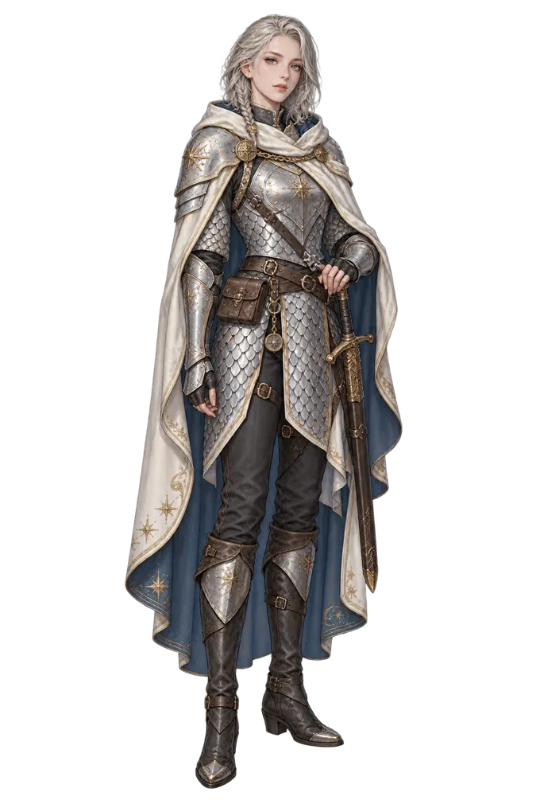

SCENE 04 · 演出
演示场景与角色素材
星落钟塔
夜色将至，某个约定仍在等待。
莉娜 · 银岚
钟声停了。可我总觉得……那道门的另一边，还有人在等我们。
点击角色切换演出 · 说话者高亮
第 1 轮 · 莉娜行动剩余 4 /
4 格
点击亮起的格子移动 · 不计算距离单位
CONFLICT第 1 轮我方行动中

莉娜 · 银岚Lv.20 · 展示角色
HP46/ 65MP38/ 70库存 IP4/ 6物语点3泽尼特1,280 Z